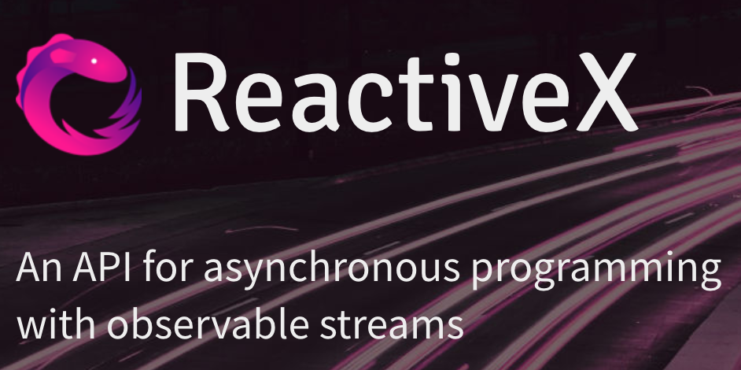

RxJS Introduction
by Michael Hoffmann (@Mokkapps)Agenda
- Rx Introduction
- RxJS Basics
- Observable vs Promise
- RxJS Testing
- Observables in Angular
What is reactive programming?
"Developing with asynchronous data streams"
Reactive Extension (Rx)
Rx combines the best ideas from
- Iterator pattern
- Functional programming
- Observer pattern
Observer & Observable
Observable: "Event Producer"
Observer: "Event Observer"
Hot vs. Cold Observable

Rx Marbles
Interactive diagrams of Rx Observables
www.rxmarbles.com
Defining Observers
Code Example
import { filter, map } from 'rxjs/operators';
const obs = of(1, 2, 3, 4, 5)
// pipe different operations
.pipe(
filter(n => n % 2 !== 0),
map(n => n * n)
);
// Subscribe to get values
obs.subscribe(
x => console.log(x),
err => console.error("An error occurred", err),
_ => console.log("Observable completed")
);
| Notification Type | Description |
|---|---|
| next | Required. A handler for each delivered value. Called zero or more times after execution starts. |
| error | Optional. A handler for an error notification. An error halts execution of the observable instance. |
| complete | Optional. A handler for the execution-complete notification. Delayed values can continue to be delivered to the next handler after execution is complete. |
Important Operators
switchMap
Typical usecase: HTTP request returns value which is needed for following HTTP request
Example: Router ID includes an ID which we need for an HTTP method call parameter
The switchMap operator also cancels previous in-flight requests
ngOnInit() {
this.hero$ = this.route.paramMap.pipe(
switchMap((params: ParamMap) =>
this.service.getHero(params.get('id')))
);
}
- map() --> Similar to Array.map
- filter() --> Similar to Array.filter
- combineLatest() --> Combines multiple Observables to create an Observable whose values are calculated from the latest values of each of its input Observables.
- tap() --> Intercepts each emission on the source and runs a function, but returns an output which is identical to the source as long as errors don't occur.
Creational Observable
- of(1) --> Emits 1 and completes
- from([1, 2, 3]) --> Emits 1, 2, 3 and then completes
- empty() --> Completes directly (useful for tests/mocks)
Subjects
Subjects are observer and observable at the same time
import { Injectable } from '@angular/core';
import { Observable, BehaviorSubject } from 'rxjs';
@Injectable({
providedIn: 'root'
})
export class UserService {
get user$(): Observable {
return this.usersSubject.asObservable();
}
private users = [];
private usersSubject: BehaviorSubject = new BehaviorSubject(this.users);
constructor() {}
addUser(userName: string): void {
this.usersSubject.next([...this.users, userName]);
}
}
Observables compared to promises
Observable (Creation and subscription)
Observables are not executed until a consumer subscribes
The subscribe() executes the defined behavior once, and it can be called again.
// declare a publishing operation
new Observable((observer) => { subscriber_fn });
// initiate execution
observable.subscribe(() => {
// observer handles notifications
});
Promises (Creation and subscription)
Promises execute immediately, and just once
The computation of the result is initiated when the promise is created
There is no way to restart work
// initiate execution
new Promise((resolve, reject) => { executer_fn });
// handle return value
promise.then((value) => {
// handle result here
});
Observable Chaining
Observables differentiate between transformation function such as a map and subscription
Only subscription activates the subscriber function to start computing the values
// nothing happens until subscribe() is called
observable.map((v) => 2*v);
Promises Chaining
Promises do not differentiate between the last .then clauses (equivalent to subscription) and intermediate .then clauses (equivalent to map).
promise.then((v) => 2*v);
Observable Cancellation
Observable subscriptions are cancellable
Unsubscribing removes the listener from receiving further values, and notifies the subscriber function to cancel work.
const sub: Subscription = obs.subscribe(...);
sub.unsubscribe();
Promise Cancellation
Promises are not cancellable
Observable Error Handling
Observable execution errors are delivered to the subscriber's error handler, and the subscriber automatically unsubscribes from the observable.
obs.subscribe(() => {
throw Error('my error');
});
Real World Example
import { ajax } from 'rxjs/ajax';
import { map, catchError, retry } from 'rxjs/operators';
// Return "response" from the API. If an error happens,
// return an empty array.
const apiData = ajax('/api/data').pipe(
retry(3), // Retry up to 3 times before failing
map(res => {
if (!res.response) {
throw new Error('Value expected!');
}
return res.response;
}),
catchError(err => of([]))
);
apiData.subscribe({
next(x) { console.log('data: ', x); },
error(err) { console.log('errors already caught... will not run'); }
});
Promises Error Handling
Promises push errors to the child promises.
promise.then(() => {
throw Error('my error');
});
Observable Event Example
// Setup
const clicks$ = fromEvent(buttonEl, ‘click’);
// Begin listening
const subscription = clicks$.subscribe(e => console.log(‘Clicked’, e));
// Stop listening
subscription.unsubscribe();
Typeahead Example
import { fromEvent } from 'rxjs';
import { ajax } from 'rxjs/ajax';
import { map, filter, debounceTime, distinctUntilChanged, switchMap } from 'rxjs/operators';
const searchBox = document.getElementById('search-box');
const typeahead = fromEvent(searchBox, 'input').pipe(
map((e: KeyboardEvent) => e.target.value),
filter(text => text.length > 2),
debounceTime(10),
distinctUntilChanged(),
switchMap(() => ajax('/api/endpoint'))
);
typeahead.subscribe(data => {
// Handle the data from the API
});
Angular HttpClient
Returns observables from HTTP method calls
- Observables do not mutate the server response
- HTTP requests are cancellable through the unsubscribe() method
- Failed requests can be retried easily.
- Complete automatically after each request
Async Pipe
Subscribes to an observable or promise and returns the latest value it has emitted
Angular automatically unsubscribes if component is destroyed
@Component({
selector: 'async-observable-pipe',
template: `Time: {{ time | async }}`
})
export class AsyncObservablePipeComponent {
time = new Observable(observer =>
setInterval(() => observer.next(new Date().toString()), 1000)
);
}
Other Angular Observables
- The Router and Forms modules use observables to listen for and respond to user-input events
- The EventEmitter class extends Observable
Naming Convention
Due to TypeScript it is often clear if a variable is an observable
Often used to indicate observables: Trailing "$"
stopwatchValue: number;
stopwatchValue$: Observable;